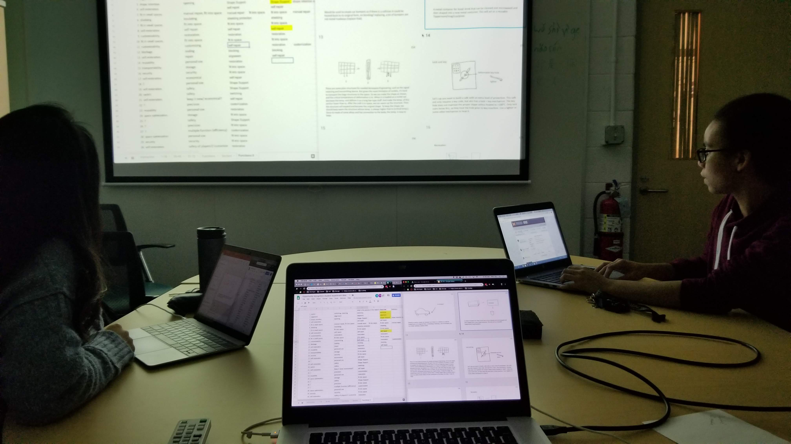

Research

Design Thinking in Engineering University of Michigan - Daly Research Lab
I am currently a reserach assistant in the College of Engineering:
1) Conducting user interviews to study front-end design practices and ideation.
2) Comparing how design processes are being taught in engineering verses how they compare to the best practices in design.
3) Analyzing previous user studies and quantitative research data to aid in the early stages of idea generation and concept selection.